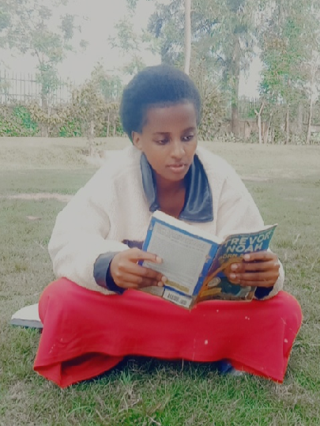

AYEBAZA ESTHER
I'm currently a student at AkiraChix from south western Uganda ,Kanungu district. I’m an industrious, curious and ambitious girl proud to be learning both frontend and backend development using html,css,Javascript,Kotlin and building their functionality with python
Abel and Patricia's marriage
Abel wanted a traditional marriage with a traditional wife. For a long time I wondered why he ever married a woman like my mom in the first place, as she was the opposite of that in every way. If he wanted a woman to bow to him, there
were plenty of girls back in Tzaneen being raised solely for that purpose. The way my mother always explained it, the traditional man wants a woman to be subservient, but he never falls in love with subservient women. He’s attracted to independent
women. “He’s like an exotic bird collector,” she said. “He only wants a woman who is free because his dream is to put her in a cage.

Patricia was an independent woman and i don't think she would be a good wife to Abel since Abel wanted a wife he could rule. Further in the novel,the couple starts fighting and this was because Abel thought that Patricia never respected him as a husband. To my opinion,if Abel wanted a wife who could give him the kind of respect he wanted ,he would not have married Patricia because Patricia never used to live the kind of life Abel wanted her to live. This is evidenced on pages 255 and 256 ,where Abel never wanted Patricia to talk back at him and he kept insisting that she should shut up after hitting her.
How Trevor Noah used humour to make friends and come out of difficult situations.
Trevor's learning different languages made him to survive on the day he was walking down the street and a group of Zulu guys was walking behind him,Trevor was hearing them planning to mug him on page 55 Trevor just told them "Yo, guys,why
don't we just mug someone together?I 'm ready.Let's do it". The guys were really shocked after Trevor speaking in their language. This saved Trevor from violent harm. Trevor clearly says learning different languages became a tool that saved
him for the rest of his life.
"I h'd found my niche.Since I belonged to no group I learned to move seamlessly between groups.I floated.I was a chameleon,still a cultural chameleon.I learned to blend with everyone.I popped around to everyone,working,chatting, telling jokes
and making deliveries, Pg 140"Trevor's ability to blend with everyone helped him to make friends in schools where he was called a foreigner.
Trevor actually suprised me when he said that "don't ask to be accepted for everything you are, on page 141,he says "For me it was humor.I learned that even though I didn't belong to one group,I would part of any group that was laughing"
This really showed me how he really managed to take everyone as his fellow though he felt like he belonged to no group.